뉴비용 게임 소개
로스트아크를 한번도 해본적 없는 뉴비들을 대상으로 한 직업 소개 및 간단한 게임 소개입니다.
뉴비분들이 아니라면 넘어가셔도 상관 없습니다.
게임 소개
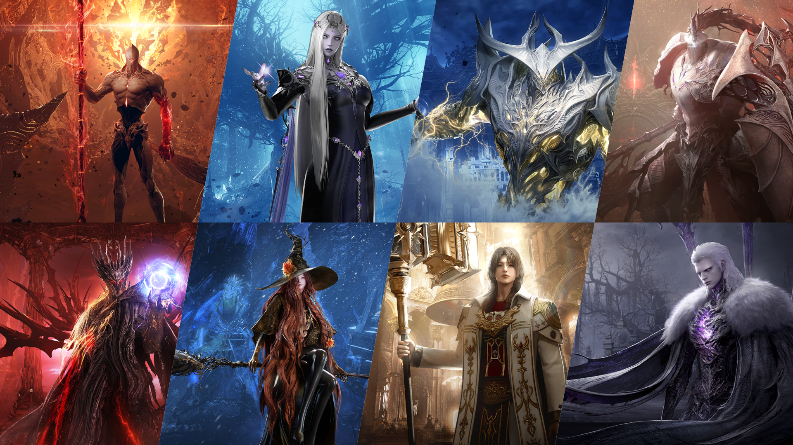
로스트아크는 레이드가 메인인 RPG 게임입니다.
오픈 초기에는 레이드 외에도 항해, 생활, PVP 등 다양한 방식으로 게임을 즐기고 레벨을 올리는게 가능했습니다.
하지만 지금은 레이드만 남고 나머지 컨텐츠는 서브 컨텐츠로만 남아있습니다.
쌀먹 되나요?
🔍 신뢰도 업데이트 내역
신뢰도 시스템 추가 | |||||||||||||||
신뢰도 시스템이 추가되었습니다.

신뢰도 시스템 적용에 따른 기존 거래 관련 조정사항 [거래소 및 경매장]
[콘텐츠 전리품 경매]
[우편 시스템] 우편 시스템을 통해 전체 서버 간 골드 송금 기능을 추가하였습니다.
|
안됩니다.
신뢰도 생긴 이후로 전업 쌀먹은 불가능합니다. 메랜하러 가십쇼.
아직도 로아로 전업 쌀먹하는 애들은 머리가 나쁜겁니다.
직업 소개
로스트아크는 딜러와 서포터로 직업군이 나누어지며, 기본 1파티는 딜러 3명 + 서포터 1명으로 구성됩니다.
딜러 3명에 서포터 1명이니 유저 비율이 3:1이 바람직하지만 실제로는 서포터 유저가 적습니다.
그래서 공팟 모집시 서포터가 부족한 랏폿 현상이 생기기도 합니다.
랏폿 현상은 특히 신규 유저가 유입되는 시기에 신규 유저 레벨대에서 많이 나타납니다.
신규 유저들은 아무래도 딜러를 키우는 사람이 많으니까요.
하지만 항상 모든 구간에서 랏폿인건 아니고 신규 레이드 난이도나 업데이트에 따라 랏딜인 경우도 있으니
신규 유저분들은 그냥 하고 싶은거 하시면 됩니다.
딜러 직업군
딜러 직업군은 공격 메커니즘에 따라 크게 사멸(백/헤드어택)과 비사멸(타대) 직업군으로 구별됩니다.
사멸 직업군
사멸은 로스트아크 시스템 중 공격 타입이 '백어택' 또는 '헤드어택'이 주류인 직업을 말합니다.
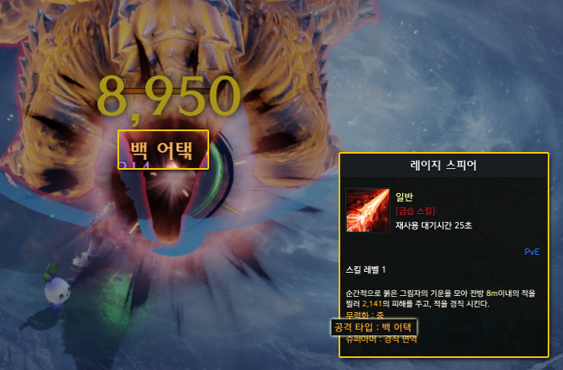
- 위치: 몬스터 후방 공격
- 보너스: 피해량 +5%, 치명타 적중률 +10%
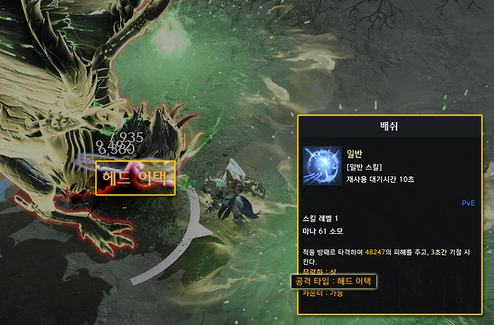
- 위치: 몬스터 전방 공격
- 보너스: 피해량 +20%, 무력화 +10%
모든 스킬에 백어택,헤드어택이 적용되는게 아니라 '공격 타입'에 백어택, 헤드어택이 적혀있는 스킬들만 적용이 됩니다.
로스트아크는 게임 특성 상 몬스터 어그로가 1명에게 고정되지 않습니다.
어그로가 수시로 바뀌기 때문에 몬스터 헤드/백 방향이 계속해서 바뀌고 이걸 따라가면서 딜을 해야 하기 때문에 사멸 직업군이 타대 직업군 보다 난이도가 높습니다.
그렇다고 리턴이 더 좋으냐 하면 딱히 그렇지도 않습니다.
로스트아크 밸런스가 이유가 있어서 세거나 약한게 아닙니다.
그냥 전재학 마음에 드는 캐릭터가 쌔기 때문에 사멸 직업군이라고 비사멸 직업군보다 강한것도 아니고 비사멸 직업군이라고 사멸 직업군보다 약한것도 아닙니다.
난이도도 비사멸 직업에 비해 어렵고 그렇다고 리턴이 큰것도 아니기 때문에 뉴비들에게 추천을 한다면 비사멸 직업군을 추천합니다.
하지만 키우면 안될 정도로 리스크가 큰건 아니라서 사멸 직업을 하고 싶다면 하셔도 상관없습니다.
비사멸 직업군 (타대)
공격 타입에 '백어택' / '헤드어택' 제약이 없는 스킬이 주류인 직업군입니다.
사멸 직업군에 비해 포지셔닝 제약이 없어 딜 넣기가 편하고 서포터의 케어를 받기 쉽습니다.
사멸에 비해 난이도가 낮지만 그렇다고 리턴이 낮은것도 아니라서 뉴비들은 비사멸 직업군을 먼저하는게 좋습니다.
하지만 위에서도 말했듯이 키우고 싶은게 있다면 그냥 키우셔도 됩니다.
서포터 직업군
서포터는 바드, 홀리나이트, 도화가, 발키리 4개의 직업이 있습니다.
서폿은 딜러에 비해 난이도가 높습니다.
딜러는 보스 몬스터 1마리만 보면 되지만 서폿은 보스 몬스터와 아군 딜러 3명까지 같이 보면서 레이드를 해야합니다.
지금 게임 자체가 서폿 의존도가 심하게 높은 상태이기 때문에 서폿이 못하면 레이드 난이도가 크게 올라갑니다.
그러니 '나는 무조건 서포터를 할거야'하는 뉴비가 아니라면 딜러로 시작하는걸 추천드립니다.
서포터를 좋아해서 서폿으로 시작하려는 뉴비가 있다면 말리지는 않습니다.
대신 딜러보다는 공부를 많이 하고 시작하시기를 부탁드립니다.
전투 시스템 소개
간단한 전투 시스템 소개입니다.
전부 게임 튜토리얼에 있는 내용입니다.
로스트아크를 처음 플레이하는 유저라면 튜토리얼은 반드시 진행해줍시다. 제발요
무력화
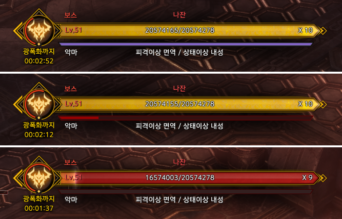
네임드 등급 이상 몬스터는 체력바 밑에 무력화 게이지가 있습니다.
무력화 게이지는 데미지가 아니라 스킬에 있는 '무력화' 피해에 따라 감소하며 무력화 게이지가 모두 감소하면 무력화 상태에 빠집니다.
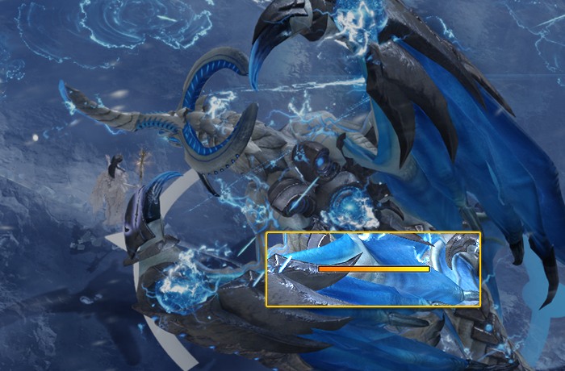
특정 레이드에서는 무력화를 해야하는 패턴이 존재합니다.
몬스터에 무력화 게이지가 따로 표시되며 무력화 게이지를 모두 깎지 못하면 실패하게 됩니다.
로스트아크 레이드에서 가장 많이 패턴으로 나오는 시스템이기 때문에 반드시 알아두셔야 합니다.
직업별로 무력화 수치가 다르고 스킬마다 다르기 때문에 자기 캐릭터에 대해서는 어떤 스킬이 무력화가 높은지 반드시 파악하고 계셔야 합니다.
부위 파괴
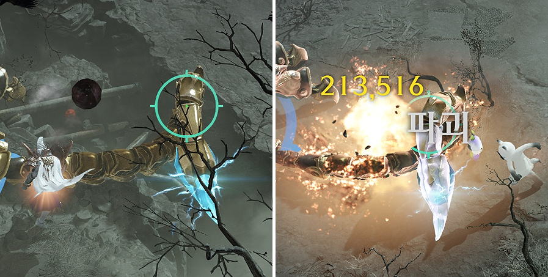
일부 몬스터는 부위 파괴가 가능합니다.
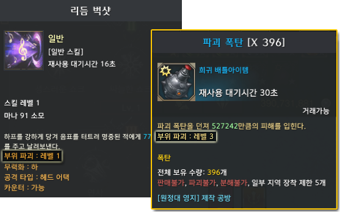
파괴 효과가 있는 스킬이나 배틀 아이템으로 파괴 수치를 누적시킬 수 있으며 일정 수치 이상 파괴되면 부위 파괴 상태가 됩니다.
부위 파괴 이후에는 몬스터의 패턴이 변경되거나 약화됩니다.
무력화와 마찬가지로 레이드 패턴으로 많이 나오니 본인 캐릭터에 대해서는 어떤 스킬에 파괴가 달렸는지 알고 있어야 합니다.
카운터
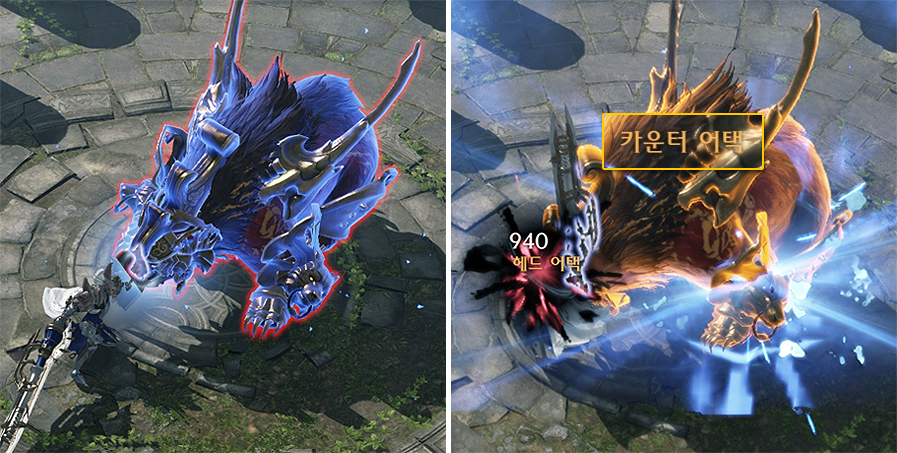
몬스터가 특정 패턴에서 파랗게 빛나면 '카운터' 스킬로 패턴을 저지할 수 있습니다.
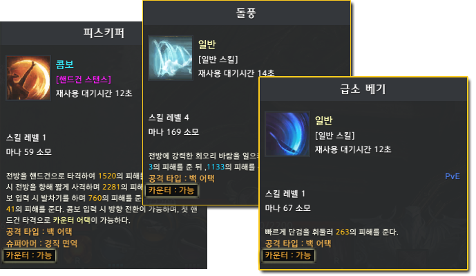
직업별로 카운터 스킬이 존재하며 카운터 스킬로 헤드어택을 성공했을 때만 카운터에 성공합니다.
레이드 기믹에 많이 활용되는 패턴이기 때문에 연습해두시면 좋습니다.
저스트 가드
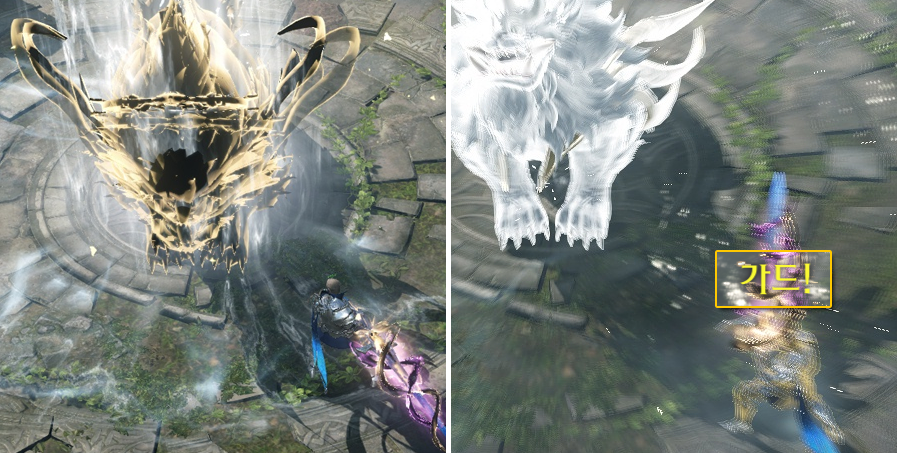
몬스터가 특정 패턴에서 노랗게 빛나면 적절한 타이밍에 맞춰 'G'키를 눌러 저스트 가드를 할 수 있습니다.
저스트 가드 성공 시 피해를 받지 않고 방어할 수 있습니다.
카운터와 마찬가지로 레이드 기믹에 많이 활용되기 때문에 연습하시면 좋습니다.
배럭

레이드가 메인 컨텐츠이지만 주간 입장 횟수가 제한되어 있고 플레이 타임이 그렇게 길지 않기 때문에 캐릭터 하나만 키울 경우 게임이 할 게 없습니다.
그래서 자연스럽게 부캐릭터를 키우게 되는데 부캐릭터에 투자를 많이 하지 않고 단순히 골드 벌이용으로 키우는걸 배럭이라고 합니다.
배럭은 단순히 골드 벌이용 캐릭터이기 때문에 스펙업에 큰 투자를 하지 않고 벌리는 골드를 본캐릭터에 몰아주거나 다른 용도로 사용을 하게 됩니다.
배럭이 필수는 아니지만 배럭 없이 캐릭터를 키우려면 아무래도 돈이 많이 필요하기 때문에 과금을 많이 하는 유저가 아니라면 자연스럽게 배럭을 키우게 될 겁니다.
귀속 골드와 지옥 컨텐츠가 생긴 이후부터는 큰 투자 없이 귀속 골드와 귀속 재화만으로도 배럭을 키우는게 가능해졌습니다.
나이스단

배럭을 키울 때 효율적으로 스펙업을 하기 위해 같은 직업으로 원정대를 구성해 보석을 돌려 쓰는걸 나이스단이라고 합니다.
보석은 거래가 가능하고 같은 직업이라면 효과를 바꿀 필요 없이 돌려쓰는게 가능하기 때문에 효율을 위해 같은 직업을 여러개 키우면 전투력 올리기가 쉽습니다.
비나이스단에 비해 상대적으로 전투력 올리기가 쉽기 때문에 레이드 취업이 편하고 배럭 숙제를 쉽게 뺄 수 있기 때문에 많은 유저들이 나이스단으로 원정대 구성을 하고는 합니다.
효율면에서는 추천하는게 맞습니다만 사람에 따라서는 동일 직업을 여러개 키우는게 적성에 안맞는 경우가 있으니 본인 판단에 따라 하시면 됩니다.
귀속 골드
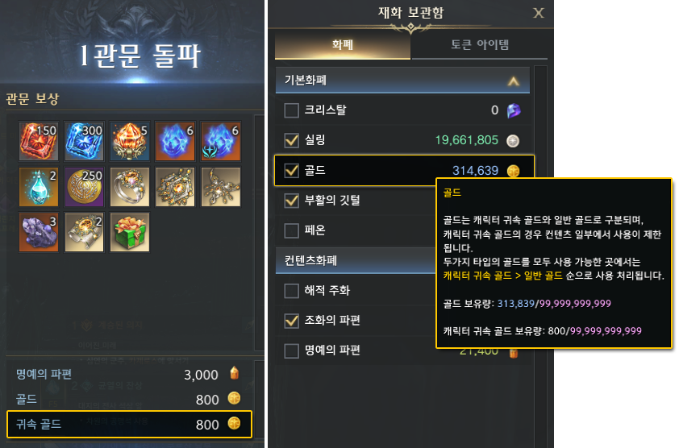
특정 컨텐츠나 레이드에서는 '귀속 골드'를 얻을 수 있습니다.
귀속 골드는 획득한 캐릭터에 귀속되는 재화로 경매장이나 유저간 거래를 제외한 대부분의 컨텐츠에서 사용이 가능합니다.
신뢰도와 함께 로아 쌀먹이 어려운 이유로 꼽힙니다.
하지만 쌀먹이 아니라면 귀속 골드 도입 이후 귀속 재화 획득량이 크게 늘어났기 때문에 오히려 배럭 키우기가 더 쉬워졌습니다.
레이드 관련 용어
헤딩팟
아무런 공략도 안보고 레이드 트라이를 하는 파티를 의미합니다.
레이드 출시 직후에 아무런 공략이 나오지 않은 상태에서 트라이를 하는 파티를 의미하는대 오픈런을 하는 공대가 아니라면 보통 하지 않습니다.
트라이팟
공략을 숙지한 상태에서 레이드 트라이를 하는 파티를 의미합니다.
공략을 반드시 숙지한 상태로 트라이하셔야 합니다.
클경팟
클리어를 해본 경험자들로 진행하는 파티입니다.
클리어를 해봤다는건 공략을 알고 있다는 의미이니 큰 기믹은 당연히 할 줄 알아야 하고 짤패턴에 익숙하지 않아서 숙련이라고 할 수 없는 파티입니다.
절대로 공략을 모르는 상태에서 가시면 안됩니다. 눕클이든 선클이든 클리어 경험이 있다는건 공략은 알고 있다는 의미여야 합니다.
반숙팟
클경팟과 숙련팟 사이의 파티입니다.
클경은 여러번인대 그렇다고 숙련도 아닌 말 그대로 반만 숙련인 파티입니다. 주로 짤패를 어려워하는 사람들이 많이 갑니다.
당연히 기믹은 할 줄 알아야 합니다.
숙련팟
말그대로 숙련자들로 진행하는 파티입니다.
기믹도 다 알고 짤패턴도 다 알아서 진행하는데 절대 문제가 생겨서는 안되는 파티입니다.
숙제팟
말그대로 레이드를 숙제처럼 뺄 수 있는 빡숙들로 이루어지는 파티입니다.
빡숙이라면 죽어서는 안되겠지만 뭔가 이슈가 있어서 누군가 죽더라도 나머지 인원이 문제없이 클리어할 수 있을 정도의 숙련도가 필요합니다.
버스
골드를 받고 레이드 클리어를 해주는 파티를 의미합니다.
문제가 많이 되고 있기는 합니다. 해외서버의 경우 버스를 막는 시도가 있기도 했는데 아직 한국서버는 직접적인 조치가 취해지지는 않고 있습니다.
레이드 관련 이벤트가 있을때는 특히 커뮤니티에서 언급이 많이 되는대 버스도 그렇고 대리도 그렇고 스마게가 확실하게 제재를 하고 있지는 않아서 진짜 심하게 어그로를 끌지 않는 이상 제재당하지는 않을겁니다.
딜버스
해당 레이드 기준으로 오버스펙인 딜러가 딜을 밀어주는 파티를 의미합니다.
일반 버스와는 다르게 같이 레이드를 진행을 하셔야 합니다.
보통 클리어 후 나오는 경매 보상을 버스 기사가 가져가거나(경미참) 버스 기사에게 명예를 주거나 합니다.